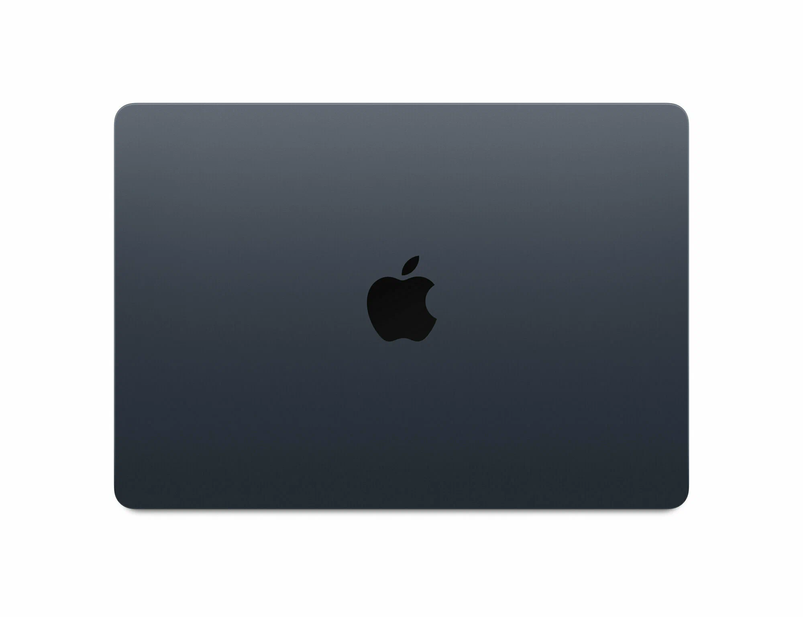

Apple MacBook Air — компактный и бесшумный ноутбук на базе чипа M3. Обладает великолепным экраном Liquid Retina, отличной автономностью и высокой производительностью. Подходит для студентов, дизайнеров и всех, кому нужен надёжный и лёгкий ноутбук на каждый день.
Apple MacBook Air на базе чипа M3 — один из самых популярных ноутбуков для учёбы и повседневной работы. Безвентиляторная конструкция обеспечивает полностью бесшумную работу даже при высокой нагрузке. Экран Liquid Retina с диагональю 13.6 дюйма поддерживает миллиард цветов и яркость 500 нит, обеспечивая точную цветопередачу для работы с фотографиями и дизайном. Чип M3 с 8-ядерным центральным и 10-ядерным графическим процессором справляется с задачами от офисных приложений до редактирования видео в 4K. Автономность до 18 часов — одна из лучших среди ноутбуков, что позволяет работать целый день без подзарядки. Зарядка осуществляется через MagSafe или любой из двух портов Thunderbolt, а вес всего 1.24 кг делает MacBook Air идеальным спутником в поездках.
© Click Store. Все права защищены.